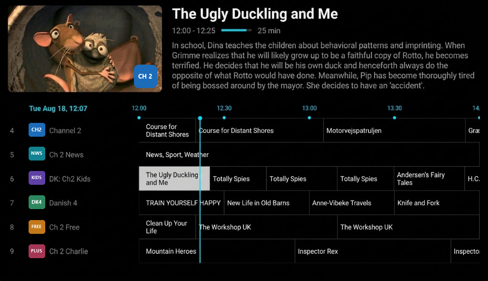
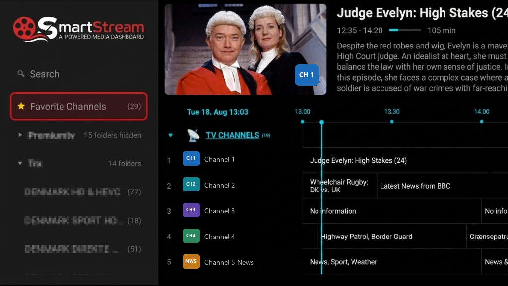
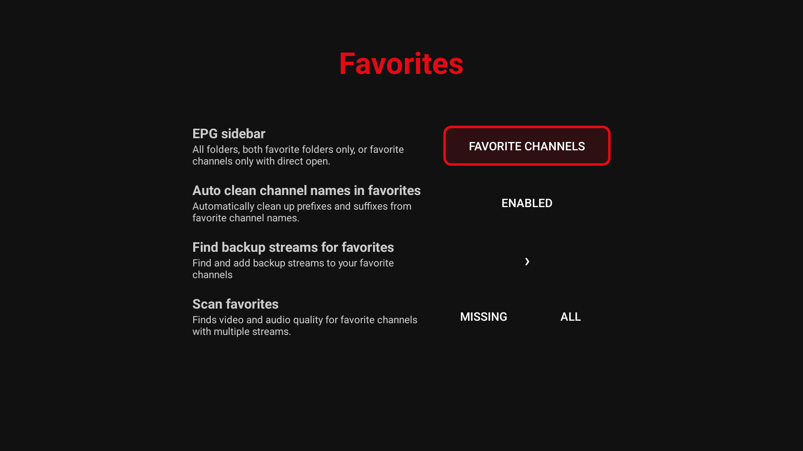
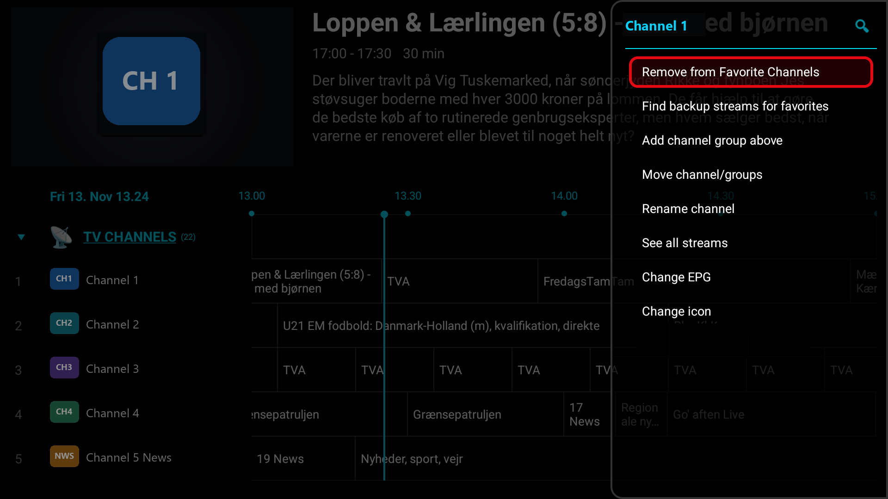
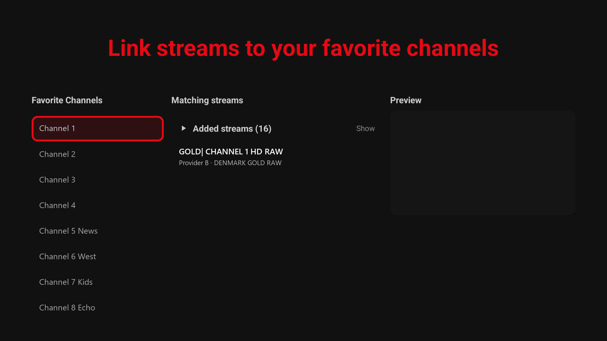
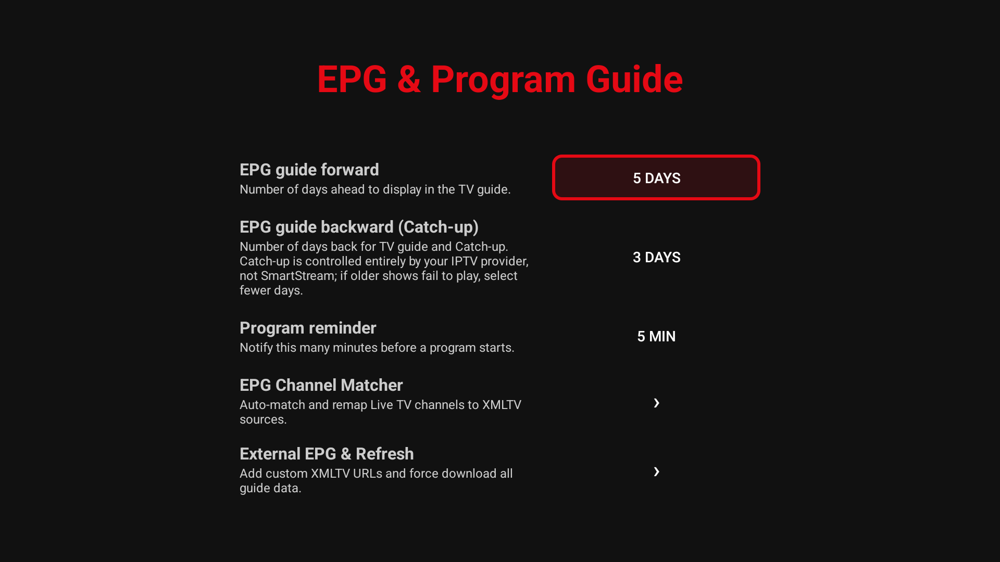
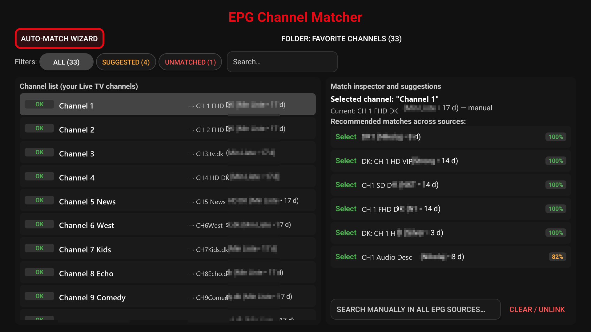
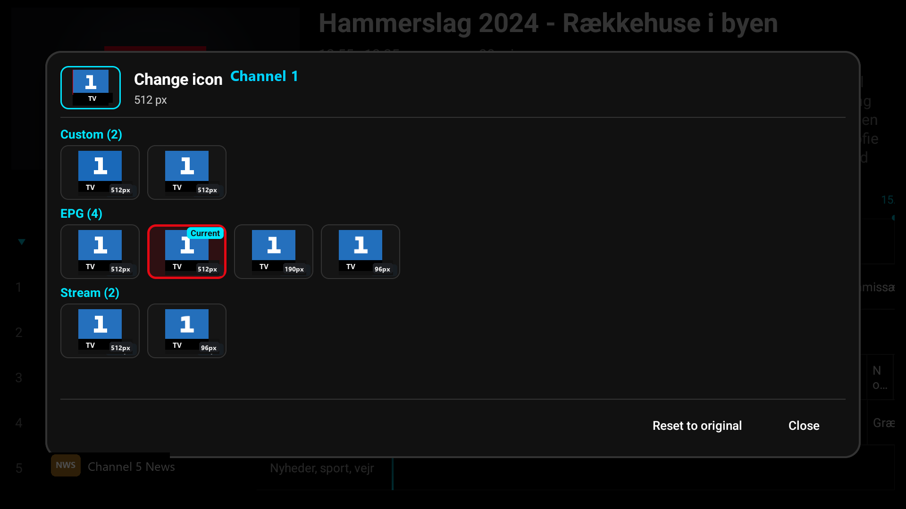
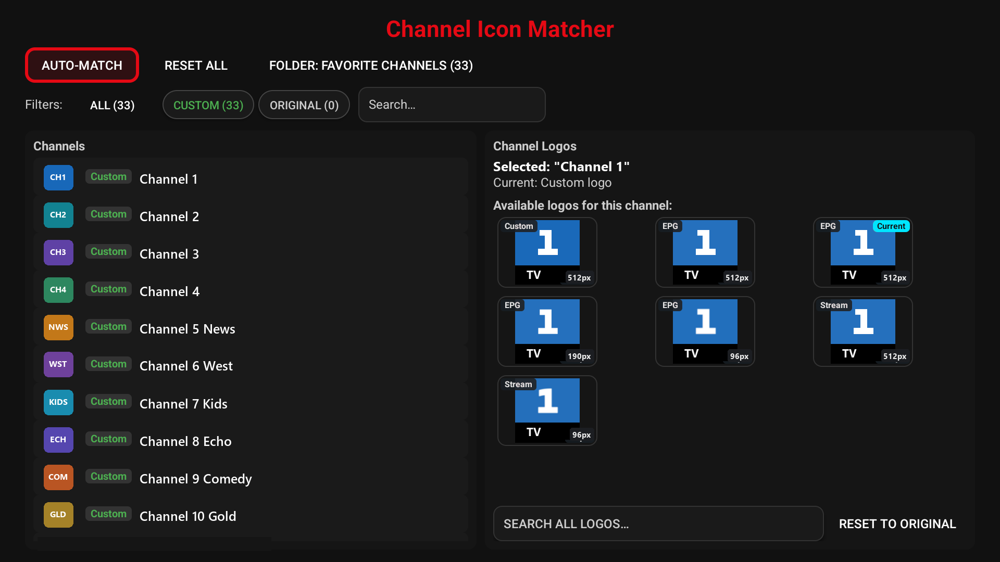
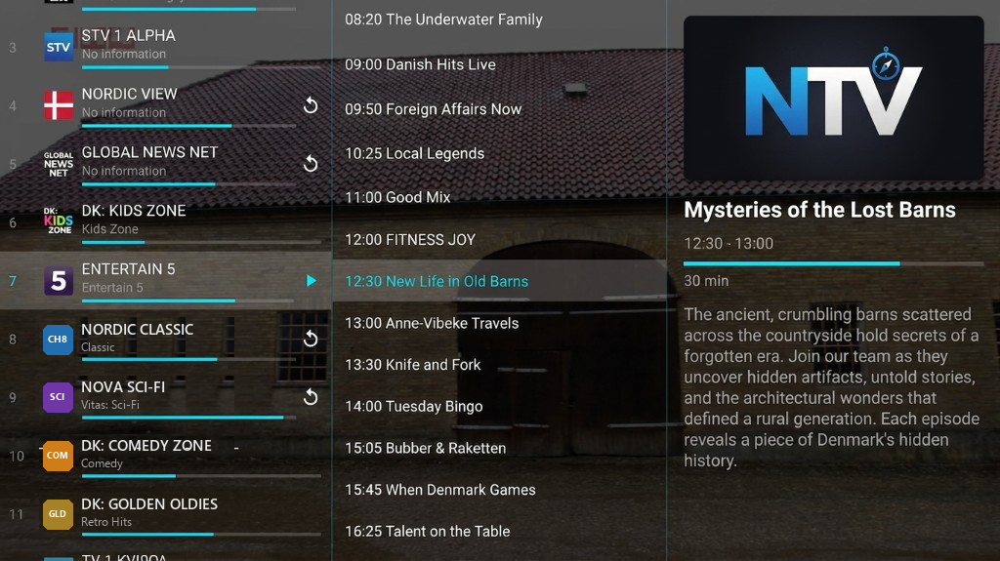

3. Daily use — Live TV
Open Live TV in the left menu. You get a program guide (EPG) with a live preview. Press OK on the current programme to watch fullscreen — the picture continues without reconnecting.

Screenshot needed: 25-live-tv-epg.png'">Guide and folders
- The left sidebar lists your selected TV folders (per provider).
- Favorite Channels sits at the top once you star channels or move folders under favorites.
- Search the guide from the side menu to find a programme or channel.
- If your provider supports catch-up, you can start a past programme from the guide.
Favorites, favorite folders, and hiding normal TV folders
- Add a channel: hold OK on a channel in the guide and choose Add to favorites.
- Add or move a whole folder: hold OK on a folder in the sidebar to choose Add all channels to Favorite Channels or Move folder under favorites so it becomes a favorite folder.
- Channel groups inside Favorites: hold OK on a channel inside Favorite Channels and choose Add channel group above to create sections, or Move channel or groups to reorder them.
- Hide normal TV folders: go to Settings → Playback & Live TV → Live TV & EPG → Favorites → EPG sidebar and switch from All TV folders to Favorite Channels. Normal provider folders are hidden so only your favorites and favorite folders appear, and Live TV opens directly into your favorites.
- Set or remove a reminder on a programme. How many minutes before start is under Settings → Playback & Live TV → Live TV & EPG → EPG & Program Guide.

Screenshot needed: 27-live-tv-favorites.png'">
Screenshot needed: 44-settings-live-tv-favorites.png'">Backup streams for favorite channels
A favorite is not limited to one provider. You can attach extra backup streams from other providers onto the same Favorite Channel. If one source is busy or drops, another stream is already linked.
- From the long-press menu (hold OK): hold OK on any channel in a normal folder and choose Use as backup for a favorite to attach it directly — or hold OK on any channel and choose Find backup streams for favorites. On a favorite that already has backups, choose See all streams to inspect or remove them.
- From Settings: open Settings → Playback & Live TV → Live TV & EPG → Favorites → Find backup streams for favorites. You can also run Scan favorites (Missing or All) there to test video and audio quality across linked streams.
- The player menu (OK in fullscreen) lets you switch streams by hand if several are linked.

Screenshot needed: 39-live-tv-long-press-menu.png'">
Screenshot needed: 38-live-tv-link-streams.png'">Linked backups are what Intelligent stream switching uses when a stream fails.
EPG Manager (EPG & Program Guide)
Open Settings → Playback & Live TV → Live TV & EPG → EPG & Program Guide to manage your TV guide sources and channel matching.
- Add your own EPG list: choose External EPG & Refresh (also reachable via + Manage XMLTV on IPTV Providers) to see provider EPG status, force a refresh of all guides now, or add up to 3 custom XMLTV URLs (typed or scanned via QR from your phone). Custom lists are shared across the household.
- Auto-match channels to the best available EPG: open EPG Channel Matcher and press Auto-match Wizard. SmartStream scans all your provider EPGs and custom XMLTV lists and matches each channel to the best available guide. You can filter by All, Suggested, or Unmatched, switch folder (e.g. Favorite Channels), or search manually.
- Single channel in the guide: you can also hold OK on any channel in Live TV and choose Change EPG to pick or reset the guide for that channel alone.

Screenshot needed: 40-settings-epg-manager.png'">
Screenshot needed: 41-settings-epg-channel-matcher.png'">TV channel icons
- From the long-press menu (hold OK): hold OK on a channel in the Live TV guide and choose Change icon. You can pick logos from the stream, EPG, or the built-in logo catalog (with pixel resolution shown), or choose Reset to original.
- Auto-match from Settings: open Settings → Playback & Live TV → Live TV & EPG → Channel Icon Matcher and press Auto-match to automatically find and apply the best channel logos for all channels in the selected folder. You can also filter Custom vs Original, search all logos manually, or reset channels back to their original stream logo.

Screenshot needed: 42-live-tv-change-icon-dialog.png'">
Screenshot needed: 43-settings-channel-icon-matcher.png'">Fullscreen

Screenshot needed: 26-live-tv-fullscreen.png'">- Up / Down — zap to the next or previous channel
- Left — open the on-screen guide overlay
- Right — jump back to the previous channel
- OK — player menu (info, tracks, stream switch if several streams are linked)
- Back — return to the guide (does not close the app)